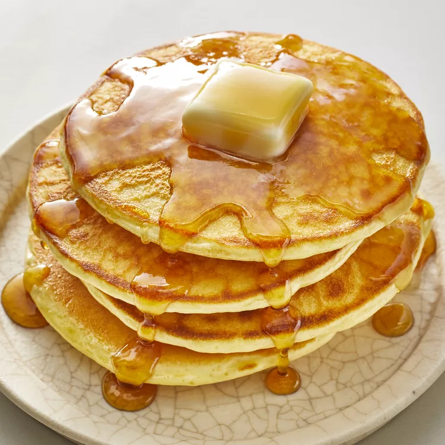

Click below to visit Google
Go to GoogleABOUT THIS RECIPIE:
Perfect pancakes are easier to make than you think. This pancake recipe produces thick, fluffy, and all-around delicious pancakes with just a few ingredients that are probably already in your kitchen (and it's so much better than the boxed stuff).
Preparation Time: 5 minutes
Cooking Time: 15 minutes
Number of Servings: 8 persons
Difficulty Level: Beginner
TIPS/NOTES:
Our pancake will tell you when it's ready to flip. Wait until bubbles start to form on the top and the edges look dry and set. This will usually take about two to three minutes on each side.
